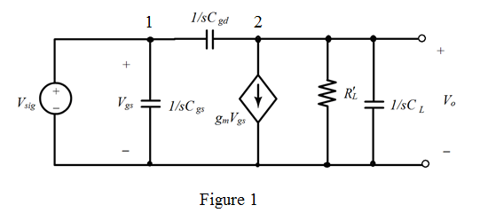

From Figure 1, it is clear that the voltage is equal to .
Simplify the equation (2) as follows:
Further simplification yields,
Therefore, the expression of voltage gain is  .
.
Refer to the Figure P9.34 in the text book.
The equivalent circuit in Laplace transform is shown in Figure 1.

Apply nodal analysis in node 1.
…… (1)
Apply nodal analysis in node 1.
…… (2)
From Figure 1, it is clear that the voltage is equal to .
Simplify the equation (2) as follows:
Further simplification yields,
Therefore, the expression of voltage gain is .
Consider the following condition, , the s term in the numerator can be neglected. In such a case the midband gain is,
Substitute 5 mA/V for  and
and  for
for .
.
Therefore, the value of midband voltage gain is.
Substitute 2 pF for , 0.4 pF for  and for
and for  .
.
Therefore, the value of upper 3-dB frequency is.